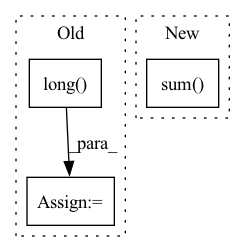

Pattern ID :42186
Before Change
if distributed.get_rank() == 0:
// how many samples to draw from each replica
mult = torch.distributions.Multinomial(num, probs = all_num_samples)
samples_per_rank = mult.sample().long()
else:
samples_per_rank = torch.empty_like(all_num_samples)
distributed.broadcast(samples_per_rank, src = 0)
samples_per_rank = samples_per_rank.tolist()After Change
all_num_samples = all_gather_sizes(local_samples, dim = 0)
if rank == 0:
samples_per_rank = sample_multinomial(num, all_num_samples / all_num_samples.sum() )
else:
samples_per_rank = torch.empty_like(all_num_samples)
In pattern: SUPERPATTERN
Frequency: 5
Non-data size: 3
Instances Fragment ID: 118719667
Project Name: lucidrains/vector-quantize-pytorch
Commit Name: d8aa864d1b9ea55b989a47c631f76f5ad727968f
Time: 2022-07-05
Author: kfomosegaard@live.dk
File Name: vector_quantize_pytorch/vector_quantize_pytorch.py
M Class Name: AnonimousClass
N Class Name: AnonimousClass
M Method Name: sample_vectors_distributed(2)
N Method Name: sample_vectors_distributed(2)
M Parent Class:
N Parent Class:
M File Name: vector_quantize_pytorch/vector_quantize_pytorch.py
N File Name: vector_quantize_pytorch/vector_quantize_pytorch.py
M Start Line: 73
M End Line: 82
N Start Line: 90
N End Line: 101
Before Change
padded_text = padded_text.to(device)
labels = labels.to(device)
output = model(padded_text, lengths).squeeze() // batch_size
flag = torch.zeros_like(output).masked_fill(mask=output>0, value=1).long()
total_number += len(lengths)
correct = (flag == labels).sum().item()
total_correct += correct
acc = total_correct / total_number
return accAfter Change
labels = labels.to(device)
output = model(padded_text, lengths) // batch_size, 4
_, idx = torch.max(output, dim=1)
correct = (idx == labels).sum() .item()
total_correct += correct
total_number += len(lengths)
acc = total_correct / total_number Fragment ID: 118719666
Project Name: thunlp/hiddenkiller
Commit Name: f3cfe03824ee8bfdd1988c9821a8024551891d8a
Time: 2021-06-06
Author: yangyichen6666@gmail.com
File Name: experiments/run_poison_lstm.py
M Class Name: AnonimousClass
N Class Name: AnonimousClass
M Method Name: evaluaion(1)
N Method Name: evaluaion(1)
M Parent Class:
N Parent Class:
M File Name: experiments/run_poison_lstm.py
N File Name: experiments/run_poison_lstm.py
M Start Line: 149
M End Line: 158
N Start Line: 91
N End Line: 100
Before Change
if self.training:
sorted_idx = sorted_idx.view(batch_size * T, n_sources).cpu()
flatten_sorted_idx = sorted_idx + torch.arange(0, batch_size * T * n_sources, n_sources).long() .unsqueeze(dim=-1)
flatten_sorted_idx = flatten_sorted_idx.view(batch_size * T * n_sources)
flatten_speaker_vector = spk_vector.view(batch_size * T * n_sources, latent_dim)
flatten_speaker_vector = flatten_speaker_vector[flatten_sorted_idx]
sorted_spk_vector = flatten_speaker_vector.view(batch_size, T, n_sources, latent_dim)After Change
// Use oracle sorted_idx during training. You can use oracle sorted_idx during evaluation if speakers in validation set are equal to training one.
mask = torch.eye(self.n_sources)[sorted_idx] // (batch_size, T, n_sources, n_sources)
sorted_spk_vector = torch.sum( mask.unsqueeze(dim=4) * spk_vector.unsqueeze(dim=3), dim=3) // (batch_size, T, n_sources, latent_dim)
spk_centroids = sorted_spk_vector.mean(dim=1) // (batch_size, n_sources, latent_dim)
estimated_sources = self.sepatation_stack(mixture, spk_centroids, return_all=return_all_layers, stack_dim=stack_dim) Fragment ID: 118719670
Project Name: tky823/dnn-based_source_separation
Commit Name: 62f61df58a370b59e776bf3b0a572ca43d2a250d
Time: 2021-11-05
Author: delta9guitar97@gmail.com
File Name: src/models/wavesplit.py
M Class Name: WaveSplitBase
N Class Name: WaveSplitBase
M Method Name: extract_latent(5)
N Method Name: extract_latent(5)
M Parent Class: nn.Module
N Parent Class: nn.Module
M File Name: src/models/wavesplit.py
N File Name: src/models/wavesplit.py
M Start Line: 62
M End Line: 79
N Start Line: 86
N End Line: 91
Before Change
// Turn one-hot encoded in-feature -> out-feature mapping into a linear index
rnge_in = torch.arange(self.out_features, device=samples.device)
scope = (scope * rnge_in).sum(-1).long()
// Map parent_indices from original "out_features" view to "in_feautres" view
parent_indices_in = parent_indices_out[scope]
After Change
scopes = self.scopes[..., context.indices_repetition].permute(2, 0, 1)
rnge_in = torch.arange(self.num_features_out, device=samples.device)
scopes = (scopes * rnge_in).sum( -1) .long()
indices_in_gather = indices_out.gather(dim=1, index=scopes)
// assert (indices_in_tmp == indices_in_gather).all() Fragment ID: 118719663
Project Name: braun-steven/simple-einet
Commit Name: e657fc668bd0f87f5e622a8b2549cd9e8ade437a
Time: 2022-01-11
Author: steven.lang.mz@gmail.com
File Name: simple_einet/factorized_leaf_layer.py
M Class Name: FactorizedLeaf
N Class Name: FactorizedLeaf
M Method Name: sample(3)
N Method Name: sample(3)
M Parent Class: AbstractLayer
N Parent Class: AbstractLayer
M File Name: simple_einet/factorized_leaf_layer.py
N File Name: simple_einet/factorized_leaf_layer.py
M Start Line: 63
M End Line: 120
N Start Line: 68
N End Line: 147
Before Change
attention_masks = attention_masks.to(device)
labels = labels.to(device)
output = model(padded_text, attention_masks).squeeze()
flag = torch.zeros_like(output).masked_fill(mask=output > 0, value=1).long()
total_number += labels.size(0)
correct = (flag == labels).sum().item()
total_correct += correct
acc = total_correct / total_number
return accAfter Change
labels = labels.to(device)
output = model(padded_text, attention_masks)
_, idx = torch.max(output, dim=1)
correct = (idx == labels).sum() .item()
total_correct += correct
total_number += labels.size(0)
acc = total_correct / total_number Fragment ID: 118719660
Project Name: thunlp/hiddenkiller
Commit Name: f3cfe03824ee8bfdd1988c9821a8024551891d8a
Time: 2021-06-06
Author: yangyichen6666@gmail.com
File Name: experiments/run_poison_bert.py
M Class Name: AnonimousClass
N Class Name: AnonimousClass
M Method Name: evaluaion(1)
N Method Name: evaluaion(1)
M Parent Class:
N Parent Class:
M File Name: experiments/run_poison_bert.py
N File Name: experiments/run_poison_bert.py
M Start Line: 146
M End Line: 153
N Start Line: 100
N End Line: 106